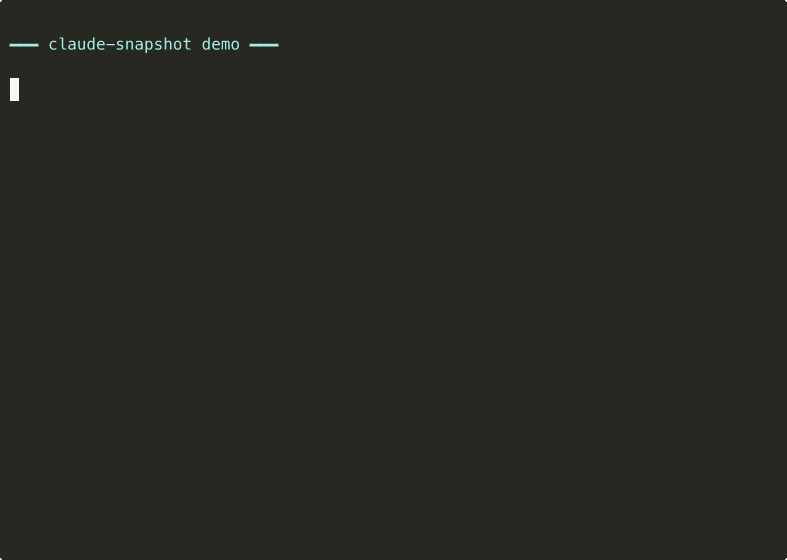

claude-snapshot: move your Claude Code setup between machines in 2 minutes

The problem
If you use Claude Code, you know ~/.claude/ becomes a living organism. Plugins, hooks, skills, settings.json, the global CLAUDE.md, a custom statusline, registered marketplaces. All of it is yours. And all of it, historically, died the moment you had to change machines, format your Mac, or log into a work computer.
claude-snapshot is a Claude Code plugin that exports your entire setup into a portable .tar.gz and applies it on another machine with a single command.
What it is for
Four real cases I actually had:
- Two machines. Personal at home, work at the office. Export from one, drop it on Drive, apply on the other.
- Backup before a format. Take a snapshot, wipe, reinstall Claude Code, apply. Setup is back.
- Experiment rollback. About to try a plugin that might break everything? Snapshot first. If it breaks, roll back to a known-good state.
- Onboarding. New teammate joining? Share the snapshot and they are up with the same plugins, hooks and conventions.
How it works
Four commands inside Claude Code itself:
/snapshot:export # exports to ~/claude-snapshot-YYYY-MM-DD.tar.gz
/snapshot:inspect <path> # reads the manifest without extracting
/snapshot:diff <path> # shows what will change before applying
/snapshot:apply <path> # applies (with confirmation + .bak of anything overwritten)Export normalizes absolute paths (/Users/you/) to $HOME, so the same tarball works across different accounts. Apply resolves back to the destination machine's $HOME and installs missing plugins via Claude Code's own /plugin install.
The five principles
Every feature decision goes through these:
P1 — Minimal blast radius. One-shot commands, no daemon, no watch, no network. Every side effect is an explicit command, scoped to ~/.claude/ plus the output tarball.
P2 — Allowlist, not denylist. A snapshot contains an explicit list of what gets captured. New files Claude Code adds in the future do not enter automatically — a plugin update decides. You pay in manual maintenance and gain predictability and auditability. The opposite tradeoff of "capture everything you can find".
P3 — No network. Ever. Zero outbound requests. Plugin installation during apply is delegated to Claude Code's own mechanism, which manages network access itself.
P4 — Diff before destroy. Every apply shows a summary of what will change, and you must confirm. Every overwritten file goes to <file>.bak first.
P5 — First-class cross-platform. Node.js, not bash. The same code runs on macOS and Linux without polyfills or if $OSTYPE branches. Windows via WSL works; native Windows is best-effort.
What migrates and what does not
| Migrates | Does not migrate |
|---|---|
settings.json (plugins, hooks, permissions, env, statusLine) | Sessions and history |
Global CLAUDE.md and other root .md files | Telemetry |
| Plugin manifests + marketplaces | MCP OAuth tokens |
| Hook scripts | Project-scoped plugins |
| MCP servers (config only, no OAuth tokens) | |
Plugin cache (with --full) |
MCP deserves a note: ~/.claude.json holds both server configs and OAuth tokens plus project state. The plugin captures only the mcpServers key and, on apply, reports what needs to be installed on the destination machine instead of overwriting the whole file. Privacy first, automation second.
Snapshot anatomy
claude-snapshot-YYYY-MM-DD.tar.gz
├── manifest.json # schemaVersion, plugins, marketplaces, hooks, MDs, MCPs, checksums
├── settings.json # your Claude Code settings
├── mcp-servers.json # MCP server configs (only if you have any; paths normalized)
├── global-md/ # CLAUDE.md and other root-level .md files
├── hooks/ # your custom hook scripts
├── plugins/
│ ├── installed_plugins.json
│ ├── known_marketplaces.json
│ └── blocklist.json
└── cache/ # (only with --full)Install
/plugin marketplace add adhenawer/claude-snapshot
/plugin install snapshot@claude-snapshot
/reload-pluginsWhy I wrote it
Generic dotfile-sync tools solve part of the problem. stow, chezmoi, yadm — they all work. But ~/.claude/ has quirks: installed_plugins.json references marketplaces that must be registered first; settings.json holds absolute paths that break across accounts; plugins have their own install logic that you cannot simulate by just copying files.
So I built a specific tool, Node.js, MIT, no telemetry, no network. Self-contained tarball, inspectable, with a backup of everything it touches.
Links
- GitHub: github.com/adhenawer/claude-snapshot
- Issues and PRs: github.com/adhenawer/claude-snapshot/issues
- License: MIT